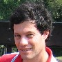

|  |
IACR Statement, Shai Halevi Running for a director of the IACR, 2025 |
|
Home My publications Presentations Contact me |
I have been an active member of the IACR since my first CRYPTO in 1995. I am an IACR fellow, and over the years I served the IACR as membership secretary, director, vice president, the chair of the TCC steering committee, and a program chair of TCC and CRYPTO. I also contributed in other ways to the services that IACR provided to its members (such as my websubrev system that the IACR was using until a few years ago). The IACR must keep serving our research community and supporting the work that we do in the advancement of science, even in today's uncertain world. We need to find creative ways of using our resources to support collaboration of researchers when budgets are cut and global travel becomes more restricted. It is upon us to maintain a sense of community among scientists in a world full of strife and divisions, and stand for the pursuit of truth even when so many embrace falsehoods. But perhaps our largest challenge is adjusting to the AI revolution, where the very meaning of creativity and discovery seems to be shifting. With the rest of the scientific world, we must navigate the new reality in which machines can express ideas. In the next few years we would need to re-establish what it means to be a human scientist, and what rules should apply to our interactions with these expressive machines in pursuit of our craft. As a director I will use my experience to help strike a balance between changes we need and the spirit that we want to maintain, with our unique blend of mathematics, computer science, and engineering. My first priority as a director will be setting policies to help maintain the high quality of our research, even as we explore new directions. I will also work to enhance the services that the IACR offers to the cryptology research community, protect our ability to support open research in cryptology, and stand for civility of discourse and mutual respect. |